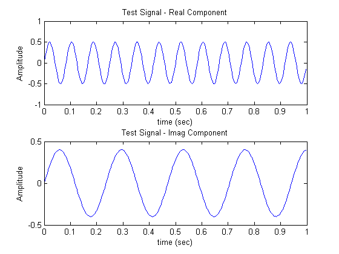
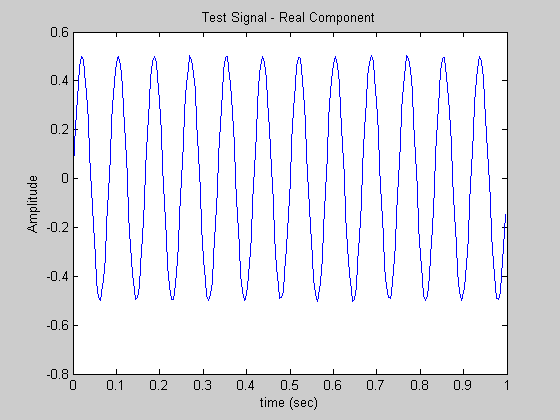
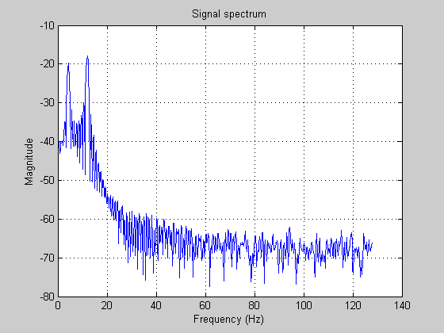

Radix-4 FFT Test Script
This file runs three versions of a Radix-4 FFT written in MATLAB:
radix4FFT1_Float.m computes a radix-4 FFT for floating point data types
radix4FFT2_FixPt.m computes a fixed point radix-4 FFT (requires Fixed Point Toolbox)
radix4FFT3_FixPtEML.m is an Embedded MATLAB version of the radix-4 FFT that can be used in Simulink. You can also generate C code for this code (using Real Time Workshop). This version can also be compiled into a MEX'd executable that runs significantly faster than the fixed point code.
For a description of the radix-4 FFT algorithm see the following link to DSPDesignLine.com:
http://www.dspdesignline.com/showArticle.jhtml;jsessionid=5DBROAJQ3
SIWCQSNDLOSKHSCJUNN2JVN?articleID=204400676&queryText=freescale+fft
Contents
- Set up a signal
- Test Original Floating Point Code
- Set Fixed Point Parameters
- Fixed Point Test
- Set Fixed Point Parameters
- Fixed Point Test
- Use emlmex to compile code into executable
- Show speed of non-compiled code
- Show speed of compiled code
- Generate C source code for radix-4 FFT
- Use the EML compliant FFT code in Simulink
Set up a signal
The test signal is the sum of 2 sinusoids plus some noise. The test signal is a complex signal with real and imaginary components.
a=256; % FFT Length t=0:1/a:(a-1)/a; s=(sin(2*pi*12*t)+.8*j*sin(2*pi*4.25*t)+.01*randn(size(t)))/2; s = floor(s*16384)/16384; %Quantized sum of 2 sines plus noise subplot(211) plot(t,real(s)) xlabel('time (sec)');ylabel('Amplitude');title('Test Signal - Real Component') subplot(212) plot(t,imag(s)) xlabel('time (sec)');ylabel('Amplitude');title('Test Signal - Imag Component')
Test Original Floating Point Code
Run the Radix-4 algorithm as a floating point implementation.
The function radix4FFT1_Float.m accepts real or complex floating point inputs and calculates the FFT.
S = radix4FFT1_Float(s); S = bitrevorder(S); % Calculate FFT using MATLAB function Y = fft(s); % Compare accuracy of Radix-4 FFT to MATLAB's FFT errs = double(S) - Y; Sig = sum(abs(Y).^2)/a; Noise = sum(abs(errs).^2)/a; SNR = 10*log10(Sig/Noise); sprintf('SNR for 2 floating point FFT methods is: %6.2f dB', SNR) figure plotPYYf(s,a) % The radix-4 FFT is nearly identical in accuracy to MATLAB's built in FFT % computation.
ans = SNR for 2 floating point FFT methods is: 311.14 dB
Set Fixed Point Parameters
The Fixed Point Toolbox can convert a test signal to a true fixed point data type with specified word lengths and fractional scaling. In this case the test signal is a 16 bit integer with 15 fractional bits.
wl = 16; sfi=fi(s,1,wl,wl-1); % Data is Q16,15 sfi.RoundMode = 'nearest'; % Fixed Point Rounding, etc. sfi.OverflowMode = 'wrap'; sfi.ProductMode = 'KeepMSB'; sfi.ProductWordLength = wl*2; sfi.SumMode = 'KeepMSB'; sfi.SumWordLength = wl*2; plot(t,real(sfi)) xlabel('time (sec)');ylabel('Amplitude');title('Test Signal - Real Component')
Fixed Point Test
Run the Radix-4 algorithm as a fixed point implementation.
The function radix4FFT2_FixPt.m accepts fixed or floating point inputs and calculates the FFT
SFI = radix4FFT2_FixPt(sfi); SFI = bitrevorder(SFI); % Calculate FFT using MATLAB function y = fft(s); % Compare results errs = double(SFI) - y; Sig = sum(abs(y).^2)/a; Noise = sum(abs(errs).^2)/a; SNR = 10*log10(Sig/Noise); sprintf('SNR for fixed vs floating point methods is: %6.2f dB', SNR) plotPYYf(double(sfi),a) % As expected, the accuracy of the fixed point FFT is reduced compared to % the floating point computation.
ans = SNR for fixed vs floating point methods is: 64.79 dB
Set Fixed Point Parameters
The accuracy of the FFT for a shorter word length can be tested by changing the input signal to a 14 bit integer with 13 fractional bits.
wl = 14; sfi=fi(s,1,wl,wl-1); % Data is Q16,15 sfi.RoundMode = 'nearest'; % Fixed Point Rounding, etc. sfi.OverflowMode = 'wrap'; sfi.ProductMode = 'KeepMSB'; sfi.ProductWordLength = wl*2; sfi.SumMode = 'KeepMSB'; sfi.SumWordLength = wl*2; plot(t,real(sfi)) xlabel('time (sec)');ylabel('Amplitude');title('Test Signal - Real Component')
Fixed Point Test
Run the Radix-4 FFT algorithm with a lower precision data type.
SFI = radix4FFT2_FixPt(sfi); SFI = bitrevorder(SFI); % Calculate FFT using MATLAB function y = fft(s); % Compare results errs = double(SFI) - y; Sig = sum(abs(y).^2)/a; Noise = sum(abs(errs).^2)/a; SNR = 10*log10(Sig/Noise); sprintf('SNR for fixed vs floating point methods is: %6.2f dB', SNR) plotPYYf(double(sfi),a) % In this case there is an approximate loss of 12 dB of accuracy compared % to the 16 bit FFT computation
ans = SNR for fixed vs floating point methods is: 52.76 dB
Use emlmex to compile code into executable
The fixed point FFT code can be accelerated by changing the algorithm to an EML-compliant algorithm and compiling it with the emlmex command. The emlmex command will produce a mex'd version of the MATLAB algorithm.
emlmex -o radix4FFT3_MX -eg {sfi} radix4FFT3_FixPtEML
Show speed of non-compiled code
tic;SFI = radix4FFT3_FixPtEML(sfi);toc tic;SFI = radix4FFT3_FixPtEML(sfi);toc tic;SFI = radix4FFT3_FixPtEML(sfi);toc
Elapsed time is 0.629191 seconds. Elapsed time is 0.626242 seconds. Elapsed time is 0.629953 seconds.
Show speed of compiled code
tic;SFI = radix4FFT3_MX(sfi);toc tic;SFI = radix4FFT3_MX(sfi);toc tic;SFI = radix4FFT3_MX(sfi);toc % The MEX'd version of the FFT code runs over 600 times faster than the % fixed point MATLAB algorithm. %
Elapsed time is 0.010710 seconds. Elapsed time is 0.001073 seconds. Elapsed time is 0.000969 seconds.
Generate C source code for radix-4 FFT
EML compliant algorithms can be used to generate C source code using Real Time Workshop.
rtwcfg = emlcoder.RTWConfig emlc -v -s rtwcfg -eg {sfi} -o radix4FFT_C radix4FFT3_FixPtEML % The source code can be inspected in the emcprj directory
rtwcfg =
Name = 'Real-Time Workshop'
IsERTTarget = 'off'
Description = 'Generic Real-Time Target'
RTWVerbose = false
GenCodeOnly = false
GenerateMakefile = true
GenerateReport = false
LaunchReport = false
MaxIdLength = 31
TargetFunctionLibrary = 'ANSI_C'
RTWCompilerOptimization = 'Off'
RTWCustomCompilerOptimizations = ''
MakeCommand = 'make_rtw'
TemplateMakefile = 'grt_default_tmf'
PostCodeGenCommand = ''
CustomSourceCode = ''
CustomHeaderCode = ''
CustomInitializer = ''
CustomTerminator = ''
CustomInclude = ''
CustomSource = ''
CustomLibrary = ''
ReservedNameArray = ''
Use the EML compliant FFT code in Simulink
The attached Simulink model hiperman_4_2007b_FixPt.mdl uses the radix-4 FFT algorithm in the OFDM_RX block (requires Simulink and Communications Blockset).